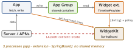
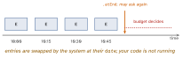
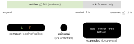

ios-platform · folio
In one line: A widget is not a live view: a separate extension process hands WidgetKit a timeline of pre-rendered entries, the system swaps them at their dates and decides when to ask again (budgeted). A Live Activity is the same WidgetKit/SwiftUI surface fed by ActivityKit state updates — local or by APNs push — for a bounded event (8 h).
Download PDF Print view LaTeX source

Widgets
Widget(StaticConfiguration/AppIntentConfiguration) +TimelineProvider+TimelineEntry(date+ data) + SwiftUI view.placeholder(in:)— sync, redacted skeleton.getSnapshot— one entry for the gallery (sample data OK).getTimeline—[Entry]+ reload policy.- Policy:
.atEnd·.after(date)·.never(only when the app callsWidgetCenter.shared.reloadTimelines(ofKind:)). All are requests: a frequently viewed widget gets ≈ 40–70 reloads/day; reloads asked while the app is foreground are free. - View body is archived (rendered once per entry): no network, no scroll, no video, no code timers. Clocks =
Text(date, style: .timer). - Memory ≈ 30 MB (undocumented)(unverified) — over it, jetsam → blank widget. Downsample images.
- Data: an App Group (entitlement on both targets) —
UserDefaults(suiteName:), shared file / DB. - Families:
.systemSmall/Medium/Large/ExtraLarge(iPad); Lock Screen (iOS 16).accessoryCircular/Rectangular/Inline. Taps: small = one.widgetURL; medium+ = manyLinks. - Interactive (iOS 17): only
Button(intent:)/Toggle(isOn:intent:); tap runs theAppIntent’sperform()without opening the app, then the timeline reloads.
Live Activities
ActivityAttributes= static (order id); nestedContentState: Codable & Hashable= the changing values. Info.plistNSSupportsLiveActivities = YES.Activity.request(attributes:content:pushType:)— foreground only (push-to-start from iOS 17.2).update(_:),end(_:dismissalPolicy:)with.default / .immediate / .after(date).- Remote:
pushTokenUpdates→ your server → APNsapns-push-type: liveactivitywithcontent-state,event: update|end. App is not launched. - Push budget;
NSSupportsLiveActivitiesFrequentUpdatesraises it.staleDate→context.isStale. - UI lives in the widget extension:
ActivityConfiguration(for: Attrs.self) { lock screen } dynamicIsland: { DynamicIsland { expanded regions } compactLeading: compactTrailing: minimal: }.
Example
struct Provider: TimelineProvider {
func getTimeline(in c: Context,
completion: @escaping (Timeline<Entry>) -> Void) {
let s = Store.shared.read() // App Group, pre-fetched
let es = (0..<4).map { // 4 entries, 15 min apart
Entry(date: .now + Double($0) * 900, s: s) }
completion(Timeline(entries: es, policy: .atEnd))
} // + placeholder(in:), getSnapshot(in:completion:)
}
let a = try Activity.request(attributes: Order(id: "42"),
content: .init(state: .init(eta: 20), staleDate: nil),
pushType: .token) // then: for await t in a.pushTokenUpdatesWho runs where

A timeline is not a loop

Live Activity life

Timeline
Traps
- “Update the widget every second” — impossible; entries +
Text(.timer); reloads are budgeted requests. - Network in the view body / slow
getTimeline— fetch in the app (or background task), write to the App Group. - App Group missing on the widget target → empty store.
Linkinside.systemSmallis ignored — usewidgetURL.- Starting a Live Activity from a silent push — no (push-to-update yes; push-to-start only 17.2+ with its own token).
- Blank widget: jetsam, or completion never called.
Remember
“P-S-T”: Placeholder (skeleton) · Snapshot (gallery) · Timeline (real). Widget = slideshow, not video. LA: 8 on, 12 out.